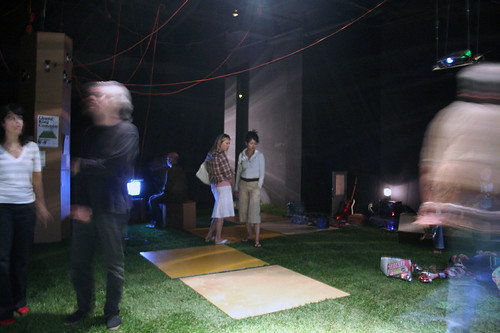

September 8, 2006 6:00 pm to September 9, 2006


In the age of broadcast media, the spectator was passive and removed from systems of production. Progressives surmised that “activated” spectators would be freed from the influences and illusions produced by the few outlets for mass culture; and the Internet seemed to deliver this vision. Rather than conforming to what is offered, consumers have an enormous array of choices that reflect even the most esoteric interests. Popular fads like weblogs, MySpace, and YouTube call the traditional divisions between production and consumption into question.
While art galleries have generally continued to imitate the store from the product-based economy - offering commodities in exchange for money - popular culture, entertainment, and business have largely adapted to a participatory model, involving the consumer in some degree within the process of production, through feedback, customization, and other forms of interaction. Individuals broadcast their own videos (without calling them art), wear their social relations like jewelry, curate, remix, and redistribute existing cultural works. This confusion of production and consumption, of object and experience, runs against the grain of the art gallery, which prefers that the art experience be something quite distinct from the larger culture.
Activated spectators aren ’t as liberated as we thought they might be. The intermingling of production and consumption generates new possibilities and collectivities, but also new limits and antagonisms. TELIC Arts Exchange explores these issues through the “Chung King Common” during the month of September.
Grass - A new, temporary floor surface for TELIC.
Discotopia - An intermittent, site-specific, interactive disco.
Light Show - A new lighting system at TELIC to sequence the space.
Landscape - Recombinant cardboard units that serve multiple functions.
Wishing Well - Fundraising through optical illusion.
Synth-Rocks - Artificial rocks containing a synthesizer for environmental sound.
WEEKEND SCHEDULE
FRIDAY
6 pm - open
6- 9 pm Dawn Kasper - performance - Dead Drunk
7 - 9 pm acks - sound performance - Campfire Song
FRI + SAT (ON GOING)
Dawn Kasper - video sculpture & stills - Evil Series #18 ‘The Chase’
Andy Kopra - video - Canutillo
Tara Kozuback - video - Jump
Fernando Sanchez - video - My Bas Jan Ader
Discotopia - sound installation - by SCI-Arc students (John Ford, Dohyung Kim, Steve Kim, Ayaka Matsushita ,Coffee Polk and Richard Yoo)
SATURDAY
11 am AAARG meeting and text trading
1 pm Guthrie Lonergan - lecture, surfing the Internet in public
2 - 6 pm Tom Leeser’s Picnic
2 pm Tom Leeser - talk on Social Interstice and the Art of the Picnic
3 pm Kelly Sears - video
3.30pm Fallen Fruit (Dave Burns, Mathias Viegener, Austin Young)
- presentation + fruit
4.30pm Andy Kopra - video
5 pm Sara Roberts - Earbie sound performance
6 pm Emily Lacy - music
8pm Albert Ortega - sound performance
Saturday’s Picnic is held in partnership with the Center for Integrated Media, CalArts
TELIC would like to thank Superior Sod for its generous grass donation, and Adam Shira from The Good Son for vinyl lettering.